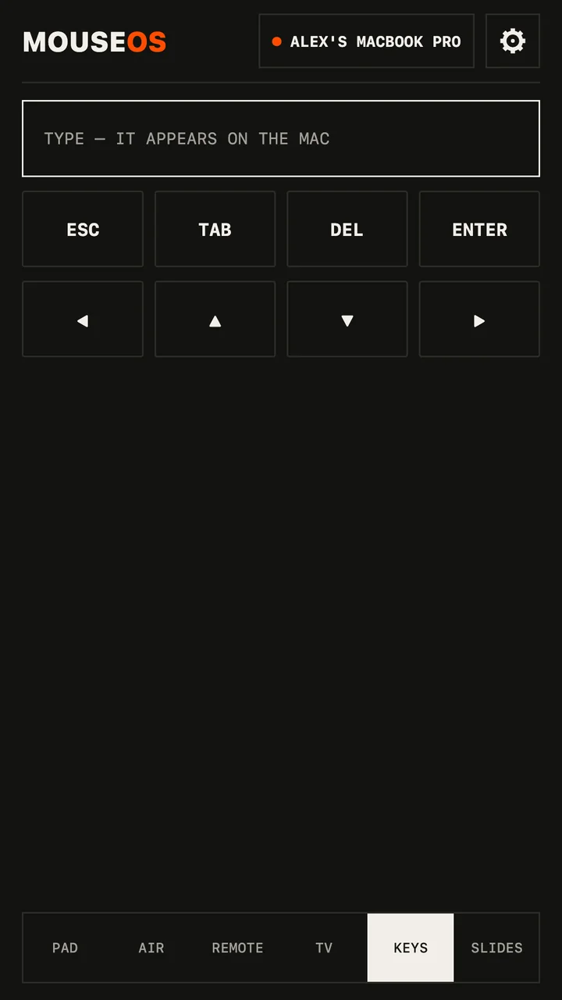

Guide · Mac · Windows · Linux
Use your phone as a mouse for your computer
The couch is too far from the desk. The laptop is plugged into the TV. The trackpad died. Your phone is already in your hand — make it the mouse and the keyboard.



Set it up in two minutes
- On the computer: install the free MouseOS app — Mac (.dmg), Windows (.msi) or Linux (.deb, .rpm) — and open it.
- Allow control: on a Mac, switch MouseOS on in Privacy & Security → Accessibility (the app opens the right pane). On Linux with Wayland, click ALLOW CONTROL. On Windows, allow it on a Private network.
- On the phone: open MouseOS on the same Wi‑Fi. It finds the computer by itself.
- Click ALLOW on the computer — once per phone. Done.
A trackpad that feels like one
- Tap to click, double‑tap to double‑click, two‑finger tap to right‑click.
- Two fingers scroll both ways, smooth, with momentum — or use the scroll strip with one thumb.
- Hold half a second (it buzzes), then move: drag and drop.
- Pointer speed that accelerates like a real trackpad: slow for precision, fast across the screen.
Or point at the screen
The Air screen is an air mouse: hold and aim the phone like a TV remote, held flat or upright. Let go, quick tap, it clicks exactly where you aimed. The gyroscope only runs while you point.
And type
Keys types into whatever has focus, in any language — accents and emoji included — with arrows, Enter, Escape and the browser shortcuts one tap away. Search a movie from the couch without walking to the keyboard.
Why Wi‑Fi and not Bluetooth
No pairing dance and no reconnects when you switch devices. The phone finds the computer on your network and remembers it. Clicks and keys go over a reliable WebSocket; pointer movement goes over UDP, the fast lane — with no server in the middle and nothing leaving your Wi‑Fi. On café or hotel Wi‑Fi that hides devices, turn on the phone's hotspot and join it from the computer.
Questions
Is it free?
Yes, the phone app and the computer app. No ads, no account, no tracking. There's an optional tip in Settings.
Which computers?
Mac with Apple silicon on macOS 11 or later; Windows 10 and 11, 64‑bit; Linux 64‑bit on X11 or Wayland (Ubuntu, Debian, Mint, Fedora, openSUSE…).
Can someone else take over my computer?
No. Every new phone needs one ALLOW click on the computer, and you can cut a phone off at any time.